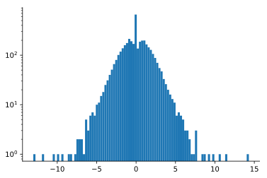
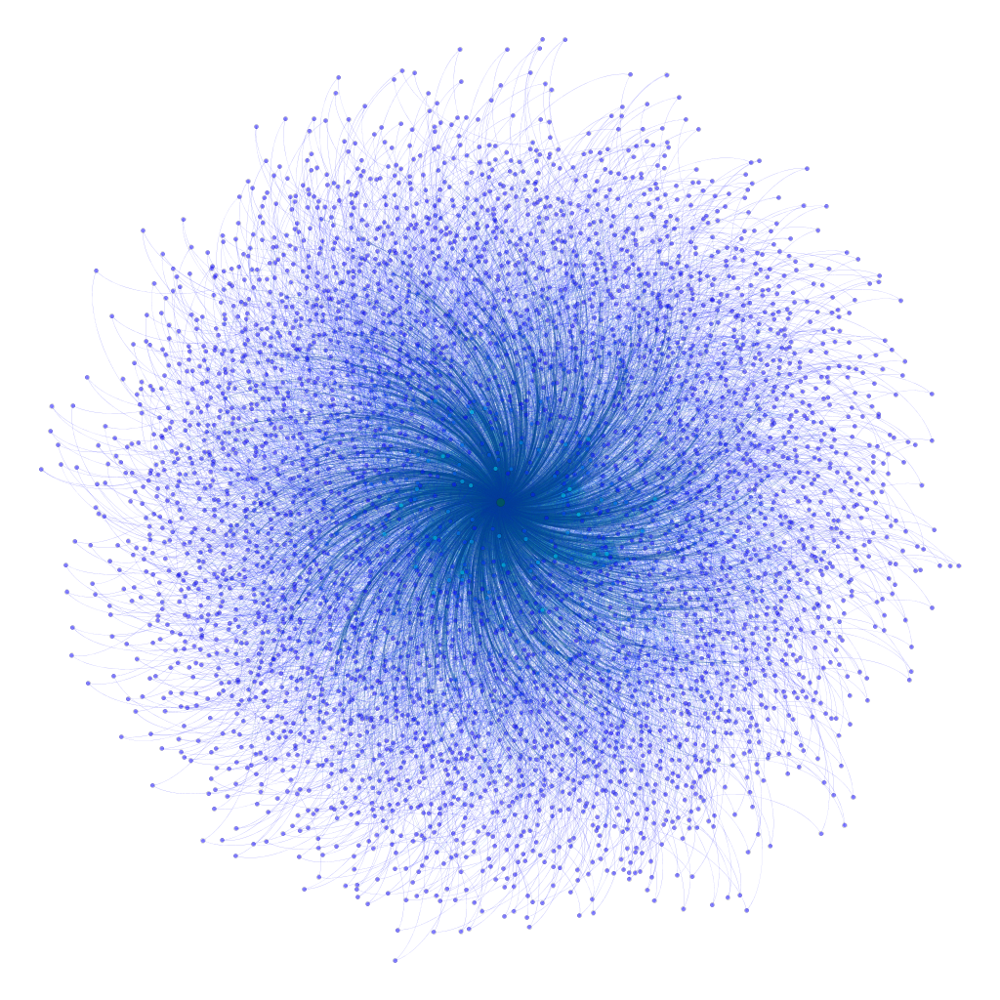
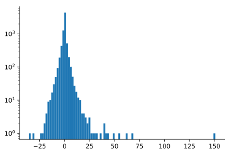
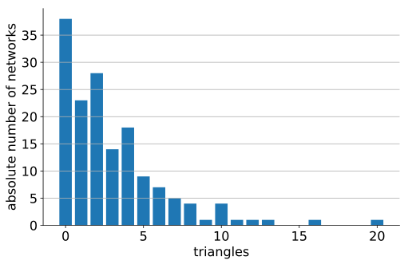
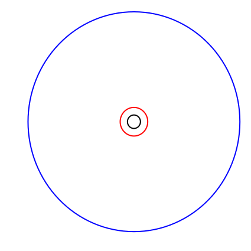

Symbolic Regression on
Network Properties
Marcus Märtens, Fernando Kuipers and Piet Van Mieghem
Follow this presentation on your device: https://coolrunning.github.io/symbreg_pres
|
Network Architectures and Services |

|
Random network
Barbasi-Albert ($N$ = 5000)
 Network of AS
tech-WHOIS, Mahadevan, P., Krioukov, D. et al. ($N$ = 7476)

Can we extract the hidden relations between the properties of a network and their corresponding spectra?
Rediscover a known formula for a network property
Discover an unknown formula for a network property
Length of the longest of all shortest paths in a network.
def diameter(G):
diam = 0
for src, dest in zip(G.nodes(), G.nodes()):
path = shortest_path(src, dest)
diam = max(len(path), diam)
return diam
The exact formula for the network diameter $\rho$ implies this exhaustive enumeration:
$$\rho = \max\limits_{src, dest} \min dist(src, dest)$$

In this example the diameter is 3.
Triangles $\blacktriangle$
Diameter $\rho$

| parameter | value |
|---|---|
| $N$ | 379 |
| $L$ | 914 |
| true diameter $\rho$ | 17 |
| approximated diameter $\hat{\rho}$ | 21.48 |
| upper bound | 160.09 |

ca-netscience

source: http://www.networkrepository.com
| parameter | value |
|---|---|
| $N$ | 4941 |
| $L$ | 6594 |
| true diameter $\rho$ | 46 |
| approximated diameter $\hat{\rho}$ | 97.52 |
| upper bound | 749.49 |

inf-power 
source: http://www.networkrepository.com